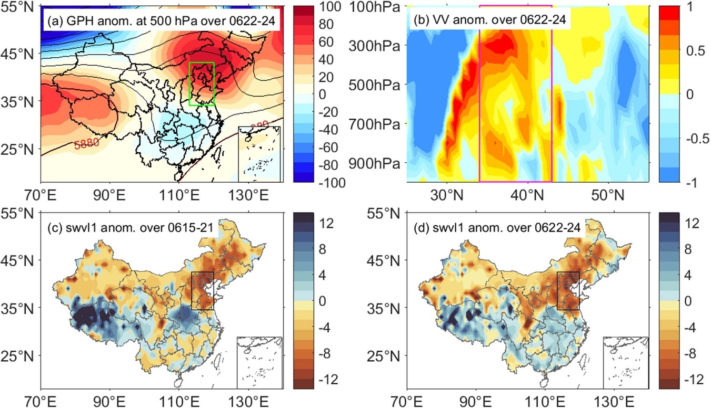
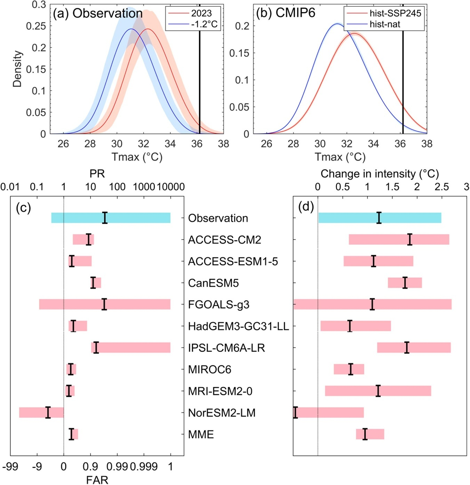
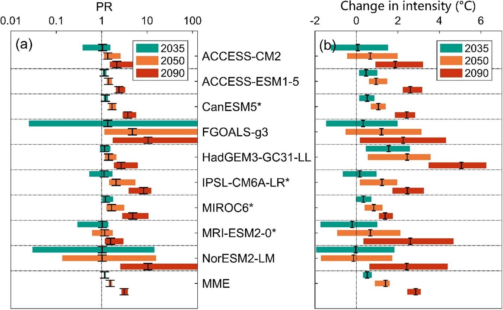
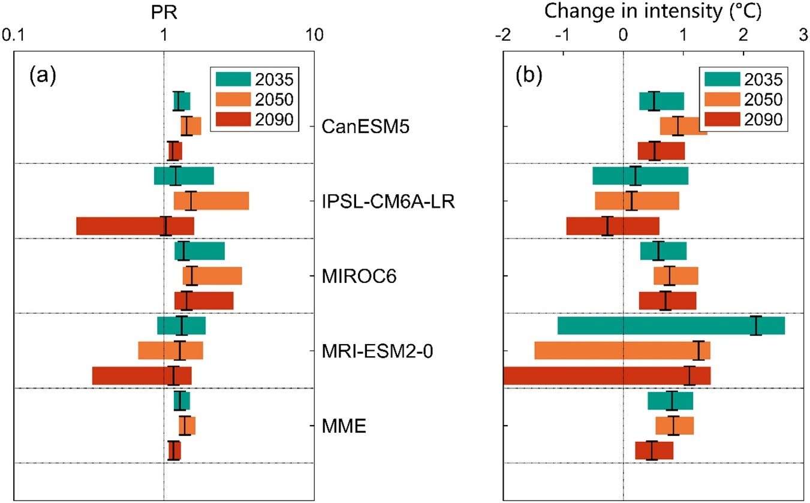

Research Highlights · Rapid event attribution
After the 40°C holiday: rapid attribution of North China’s heatwave
Overview
This rapid attribution study examines the record-breaking heat over North China during the June 2023 Dragon Boat Festival holiday. CMIP6 simulations show that human-induced climate change made such three-day heat events about 3.6 times as likely and 1.0°C more intense. Even under a low-emissions pathway that reaches net-zero CO₂ emissions, similar events are projected to remain more frequent and intense toward the end of the century than in the 2023 climate. Cutting emissions can substantially limit the increase, while adapting to extreme heat remains a long-term task.
Background
The heat in North China in June 2023 was hard to miss. Between 21 and 30 June, maximum temperatures exceeded 40°C at 124 stations in China’s national meteorological network across the region. Beijing, Tianjin and Shijiazhuang each recorded their highest number of hot June days since 1961. During the Dragon Boat Festival holiday on 22–24 June, Beijing reached at least 40°C on three consecutive days for the first time on record, making holiday outings a test of heat tolerance.
With many people travelling and spending time outdoors, the consequences soon extended beyond weather records. Heatstroke cases increased, Beijing’s power grid load rose by about 30% compared with the same period in 2022, and cooling accounted for 35% of the total load. The experience raised immediate questions about how much human-induced climate change had contributed and how often people might face similar heat in the future.
Many attribution studies have taken months or years to complete, by which time public and media attention has moved on. Rapid attribution aims to provide a quantitative explanation while the event is still fresh in people’s minds. Using the promptly available ERA5 reanalysis alongside CMIP6 simulations, this study was part of our effort to develop a rapid attribution system for China.
Methods
We focused on the hottest three consecutive days in June, averaged across North China. For each year, we calculated running three-day averages of daily maximum temperature, selected the June maximum at each grid point, and took an area-weighted regional average to obtain an index called Tx3d. This captures both the duration of the heat and its regional extent.
We compared two probability-based attribution approaches. The first fitted an extreme-value distribution to ERA5 data, allowing it to shift with global mean temperature, to estimate heat in the 2023 and pre-industrial climates. The second used nine evaluated CMIP6 models to compare simulations including human influence with simulations driven only by natural factors. One approach draws on the observed temperature evolution represented by reanalysis; the other uses models to construct a climate without human influence.
In each comparison, we estimated both the probability of reaching the 2023 event’s intensity and the temperature of an event with the same rarity. Future projections used the 2023 climate as the baseline and compared the intermediate-emissions SSP2-4.5 pathway with the very low-emissions SSP1-1.9 pathway. Model climates were represented by 21-year windows centred on the target year: 2013–2033 for 2023, for example, and 2080–2100 for the end of the century.
Results
ERA5 shows that maximum temperatures exceeded 35°C across much of North China on 22–24 June, with local anomalies of about 2.9–9.4°C. The regional three-day heat index reached its highest June value since 1959, standing well above most years in the record.

A strong continental high-pressure ridge dominated North China and surrounding areas during the event. Descending air warmed through compression and favoured clear skies and stronger incoming solar radiation. Soils were also unusually dry both during the preceding week and during the heatwave, reducing evaporative cooling and amplifying the heat. These circulation and soil conditions help explain the weather at the time; the attribution analysis then estimates how human-induced climate change altered the probability and intensity of this type of event.

The ERA5-based estimate gives the event a return period of about 111 years in the 2023 climate, equivalent to roughly a 0.9% chance in any June. Human-induced climate change increased the intensity of an equally rare event by about 1.2°C, a statistically significant warming. The best estimate also indicated a higher probability, but the relatively short record and the event’s rarity produced a wide uncertainty range, so the probability change was not statistically significant.
The larger CMIP6 sample provided firmer evidence for the comparison. The multi-model ensemble estimated that human-induced climate change made three-day heat at least as intense as the 2023 event about 3.6 times as likely and increased the intensity of an equally rare event by about 1.0°C. Both changes were statistically significant. The intensity estimate was close to ERA5’s 1.2°C, with both approaches pointing to stronger heat under human influence.

Further warming makes these events more common. Under SSP2-4.5, relative to the 2023 climate, their probability is projected to reach about 1.6 times the baseline around 2035, with an intensity increase of 0.5°C. Around 2050, the changes reach about 2.7 times and 1.4°C; toward the end of the century, about 5.5 times and 2.9°C. The nine models also agree on the direction of the late-century increase.

We also wanted to know how much reaching net zero could reduce these changes. We therefore included SSP1-1.9, a scenario still relatively uncommon in event attribution studies at the time. Global CO₂ emissions reach net zero around 2060 in this pathway and become net negative thereafter. Compared with intermediate emissions, it substantially limits the increase in extreme heat during the middle and later parts of the century.
Toward the end of the century under SSP1-1.9, similar events are projected to be about 1.6 times as likely as in 2023 and 0.5°C more intense. Moving from “5.5 times and +2.9°C” under intermediate emissions to “1.6 times and +0.5°C” under very low emissions makes the benefit of mitigation tangible. Even along this low-emissions pathway, however, people would still face more frequent and intense heat than in the 2023 climate.

Discussion
The gap between these pathways shows how mitigation and adaptation contribute to dealing with future heat. Emissions cuts shape how much further extreme heat increases, while existing warming and the heat projected even under low emissions make adaptation a long-term undertaking. Heat-health warning systems, urban cooling, the scheduling of outdoor activities, electricity systems prepared for peak cooling demand, and protection for vulnerable people all need a lasting place in urban and public-service planning.
Another lesson concerns when attribution findings become available. While people are still asking why a recent event was so hot, a timely estimate of the influence of climate change can connect scientific results with everyday experience. Preparing the data access, model evaluation and statistical analysis in advance allows the assessment to begin sooner after an event, bringing routine attribution services closer to practical use.
Behind the scenes
The idea began in 2022, when I read World Weather Attribution’s (WWA) rapid study of the North American heatwave and wanted to build a rapid attribution system for China. For the model-based analysis, we chose a different route from WWA: using natural-forcing-only simulations as the reference and time slices to represent the current climate, then comparing them with simulations that included human influence. This replaced the GEV-shifted approach to fitting historical model output in that part of the analysis.
The system was actually ready in 2022, and we applied it to the exceptional heatwave over the Yangtze River basin that year. Unfortunately, during preparation for submission, we were asked to add quite a few supposedly impressive extras to that earlier manuscript. These drew a long series of questions from reviewers, and the paper was eventually rejected. The delays had also cost us the timeliness that mattered so much for rapid attribution, and that manuscript never went any further. I still regret how it turned out.
I would like to thank my junior colleague Jiacheng Jiang, who prepared the figures showing the atmospheric circulation and soil moisture analyses for this study. Speaking of WWA, I also owe special thanks to my junior colleague Yangyang Zhong, who reproduced WWA’s core attribution method single-handedly and helped my work enormously. The North China heatwave study grew out of the groundwork we had already put in.